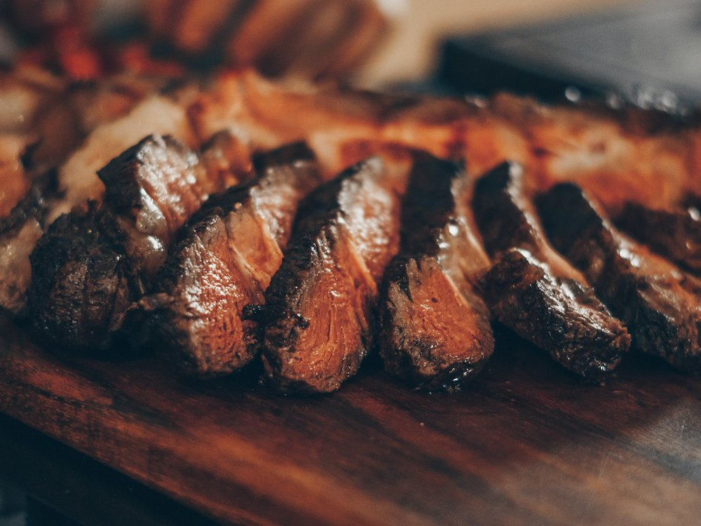

Ziyafet Steak House
Ресторан · Стейки, халал · Алматы
Рейтинг
★ 4.5
1 045 оценок
Год открытия
нет данных
в открытых источниках не нашли
Средний чек
10 000 ₸
по данным 2ГИС
Адрес и часы
📍 ул. Желтоксан, 172, Алматы · Бостандыкский район
🕒 часы работы уточняются — смотрите в 2ГИС
Удобства
О заведении
Халал стейк-хаус с молельной комнатой.
Меню
Рядом в справочнике
Zerna Coffee · Zillion · ZIRA · ZUM · ÇİCEK MANGAL · Або Бургер